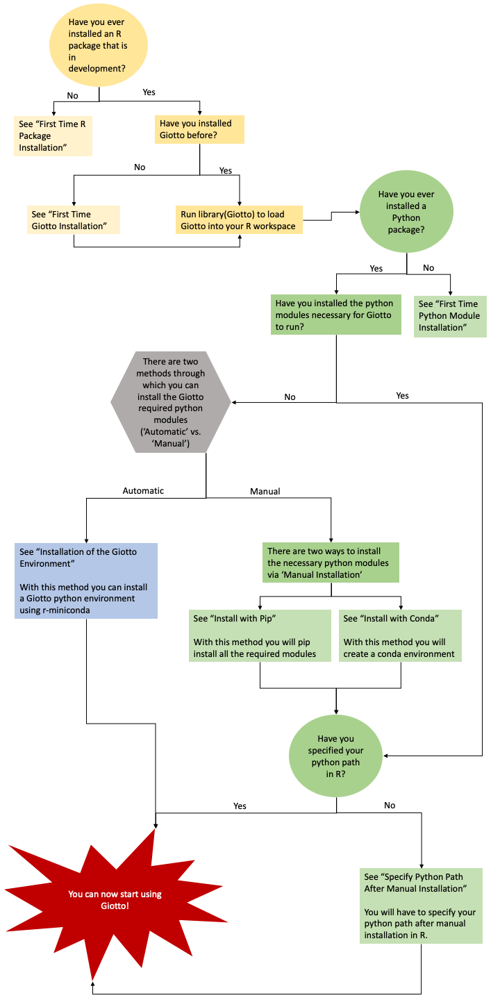

Getting Started¶
Description¶
Giotto provides a flexible framework for common single-cell processing steps such as:
Quality control
Normalization
Dimension reduction
Clustering and cell type annotation
To facilitate the analysis of recently emerging high-throughput, but lower-resolution spatial transcriptomic technologies, such as 10X Genomics Visium and Slide-seq, Giotto has 3 implemented algorithms for estimating the spatial enrichment of different cell types by integration of known gene signatures or single-cell RNAseq expression and annotation data.
Spatial information is retained through the formation of a spatial grid and/or a spatial proximity network, which is used to:
Identify spatial genes
Extract continuous spatial-expression patterns
Identify discrete spatial domains using HMRF
Explore cell-type/cell-type spatial interaction enrichment or depletion
Calculate spatially increased ligand-receptor expression in cells of interacting cell type pairs
Find interaction changed genes (ICG): genes that change expression in one cell type due to interaction with a neighboring cell type
Giotto provides a number of options to visualize both 2D and 3D data and the outcome of Giotto can be interactively explored using Giotto Viewer, which allows you to overlay the obtained results with raw or additional images of the profiled tissue section(s).
Make sure to check out the Datasets section to see examples of the Giotto workflow.
Requirements¶
R (>= 3.5.1)
Python (>= 3.0)
Installation¶
Giotto must be installed in both Python and R. Below, you will find the instructions for both R Installation and Python Installation. Please make sure that your system has satisfied all of the requirements needed to sucessfully install Giotto. In addition, we have provided a way for users to automatically install all of the necessary python modules via R (see: Automatic Installation). Checkout our Errors and FAQs Section for more information and troubleshooting tips on some common installation issues.
Giotto Installation Workflow¶
This workflow image is designed to help with Giotto Installation. Users should follow any of the three potential paths aimed to guide them through the installation process.
{kind=link}
R Installation¶
If this is your first time installing an R Package please proceed to First Time R Package Installation. If you are already familiar with installing R packages please proceed to First Time Giotto Installation.
First Time R Package Installation¶
Package Development Requirements
If this is the first time you build and install an R package you can follow this link, which has simple installation instructions for Windows, Mac OSX and Linux.
To specifically install the command-line tools of Xcode for Mac OSX you might also need to run this line in terminal:
First Time Giotto Installation¶
You can install Giotto with (~1-5 mins)
This version requires C Compilation
library(devtools) # If not installed: install.packages('devtools')
library(remotes) #If not installed: install.packages('remotes')
remotes::install_github("RubD/Giotto")
Warning
If you are having compilation (gfortran) problems check goftran.
This version does not require C Compliation
remotes::install_github("RubD/Giotto@cless")
Python Installation¶
To perform all potential steps and analysis in the Giotto spatial toolbox the user needs to have a number of python modules installed. To make this process as flexible and easy as possible two different strategies can be used
Required Modules¶
These are necessary to run all available analyses, but can be installed automatically (see Automatic Installation) or manually (see Manual Installation):
pandas
python-igraph (igraph)
networkx
leidenalg
python-louvain (community)
smfishHmrf
python.app (OSX only)
scikit-learn
First Time Python Module Installation¶
Information on how to install a Python package can be found here.
Manual Installation¶
There are two methods thorugh which users can install the necessary Python modules manually:
Important
With either of the Manual Installation options (Install with Pip in Python3 or Install with Conda) the user will have to provide the python path to createGiottoInstructions. If this is not done, Giotto will not be able to use the installed python modules.
Install with Pip¶
Install with pip in python3
For OSX, Windows, or Linux:
pip3 install pandas python-igraph networkx python-louvain leidenalg scikit-learn smfishHmrf
Install with Conda¶
If pip install does not work, try installing them within a conda environment. Something like this might work, see also this link.
Create yaml file (e.g. environment.yml) with the following information:
name: giotto_env
channels:
— defaults
dependencies:
— pip=3.4
— pandas
— networkx
- python-igraph
- leidenalg
- python-louvain
- python.app (!!only for OSX!!)
- scikit-learn
prefix: /Users/your_username/anaconda3/envs/giotto_env
Create Conda Environment Based on yaml File:
conda env create -f environment.yml
Use the path to this environment when you create the Giotto instructions or Giotto object
For OSX:
/Users/your_username/anaconda3/envs/giotto_env/bin/pythonw
For Linux:
/Users/your_username/anaconda3/envs/giotto_env/bin/python
For Windows:
/Users/your_username/anaconda3/envs/giotto_env/python.exe
Specify Python Path After Manual Installation¶
With this option, once the user has installed all of the necessary modules, via either of the methods above (e.g. Conda), the path to their python environment can be provided as an instruction in R.
# Within R
library(Giotto)
my_instructions = createGiottoInstructions(python_path = 'your/python/path')
my_giotto_object = createGiottoObject(
raw_exprs = '...',
spatial_locs = '...',
instructions = my_instructions)
Automatic Installation¶
The python modules will be installed automatically in a miniconda environment when installing Giotto. However, it will ask you whether you want to install them and you can opt out and select your preferred python path. In that case you need to do a manual installation of the python modules.
To perform all potential steps and analysis in the Giotto spatial toolbox the user needs to have a number of python modules installed. Installation of the Giotto Environment allows users to install the required Python environment via MiniConda without specifying their python path.
Installation of Giotto Environment¶
With this option, the user can just install a Giotto python environment using r-miniconda
library(Giotto)
Install Giotto Environment
installGiottoEnvironmnt()
Re-Install the Giotto environment
installGiottoEnvironment(force_environment = TRUE)
Re-install mini-conda and environment
installGiottoEnvironment(force_miniconda = TRUE)
Remove Giotto Environment
removeGiottoEnvironment()
Note
With the automatic installation option, the user WILL NOT have to specify a python path.
HowTos¶
Giotto provides a lot of analyses, visualizations and other options to facilitate your spatial dataset analysis. We are working on providing easy-to-understand examples or tutorials, but if anything is not clear or if there is something you would like to see in particular, then do not hesitate to contact us. In addition to our HowTos we have also created a way for users to test out Giotto via Binder and Docker (see: Try Giotto)
Giotto Workflow Analyses Steps¶
Optional: Install a Giotto Environment
Giotto Analyzer and Viewer interaction [work in progress]¶
How to switch between Giotto Analyzer and Viewer?
Tips and Tricks¶
See also
FAQs for more information